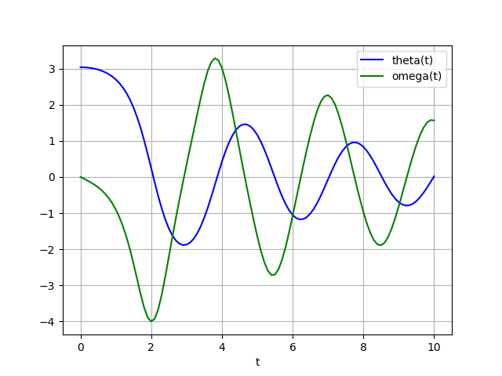
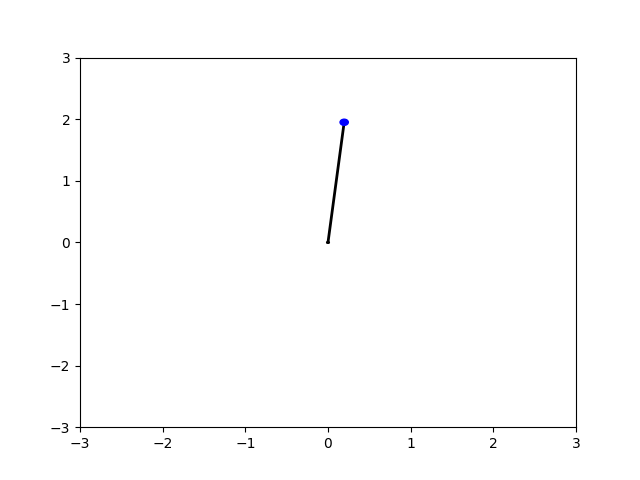
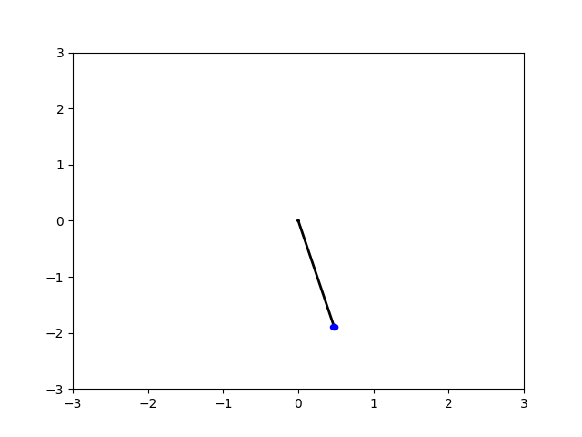
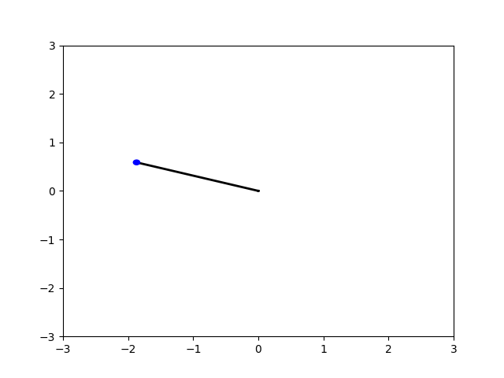
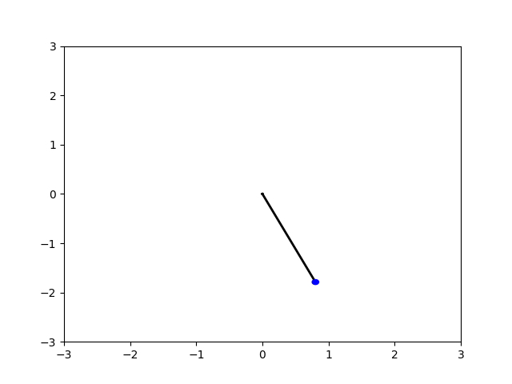
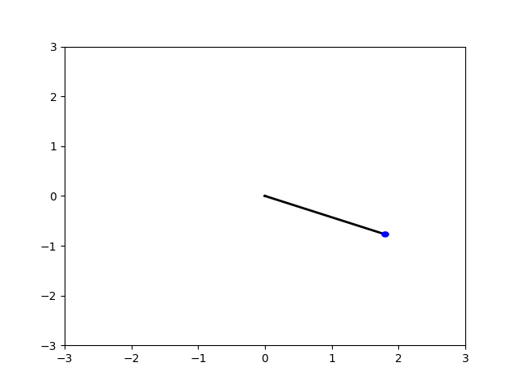
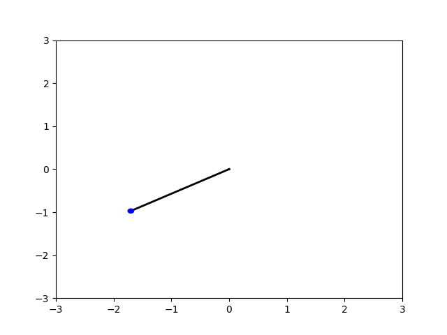

Bir ODE Sistemi Sayısal Olarak Nasıl Çözülür
Yazıda scipy paketinin içindeki odeint çözücüyü işleyeceğiz.
Sayısal çözümler önemli çünkü çoğu ODE sisteminin analitik çözümü
yoktur. Onları sayısal paketler kullanarak çözmek gerekir.
Bir sarkaç denklemi düşünelim, bu denklem ikinci dereceden $\theta$'yi baz alan bir denklemdir,
$$ \ddot{\theta}(t) + \frac{b}{m} \dot{\theta}(t) + \frac{g}{L} \sin(\theta(t)) = 0 $$
Ya da $m = 1$ dersek ve $\frac{g}{L} = c$ ile
$$ \ddot{\theta}(t) + b \dot{\theta}(t) + c \sin(\theta(t)) = 0 $$
ki $b,c$ dışarıdan tanımlanan sabitler, ve üst nokta zamansal türevi temsil ediyor.
Bu denklemi odeint ile çözmek için onu ilk önce bir birinci derece
denklemler sistemine çevirmemiz gerekiyor.
$$ \omega(t) = \dot{\theta}(t) $$
dersek (okunuş olarak $\omega$ omega, $\theta$ theta),
$$ \dot{\theta} = \omega(t) $$
$$ \dot{\omega}(t) = -b \omega(t) - c\sin(\theta(t)) $$
elde ederiz. Şimdi pend adlı bir fonksiyon tanımlayalım,
b = 0.25
c = 5.0
def pend(y, t):
theta, omega = y
return [omega, -b*omega - c*np.sin(theta)]
Bu fonksiyon ana ODE çözücünün denklemimiz hakkında bilgi aldığı nokta,
y dizini içinde $\dot{\theta}$ ve $\dot{\omega}$ var, onları $y$
içinde aynen bu sırada almayı bekliyoruz ve yenilerini hesapladıktan sonra
geri döndürürken de aynen bu sırada döndürüyoruz. Mesela döndürülen dizinde
ilk öğe omega var, bu doğru, çünkü biraz önce
$\dot{\theta} = \omega(t)$ tanımını yapmıştık, yani ilk öğede theta
turevi geri vermiş olduk, alırken theta,omega=y ile theta
aldığımız gibi.
t değişkeninde çoğunlukla zaman tanımlanır, ve bu zaman
ilgilendiğimiz zaman aralığı belli (çoğunlukla eşit aralıklı) noktalar
üzerinden dizin olarak odeint'e verilir, bunu linspace ile
yapabiliriz. $y$ için başlangıç şartlarını ayrı bir değişken içinde, mesela
y0, tanımlarız, bu aynen y büyüklüğünde bir dizin olacaktır
ve y için olduğu gibi ilk öğe theta ikinci öğe omega
için başlangıç değerini tanımlayacak.
Hepsi bir arada
from scipy.integrate import odeint
b = 0.25
c = 5.0
def pend(y, t):
theta, omega = y
return [omega, -b*omega - c*np.sin(theta)]
t = np.linspace(0, 10, 101)
y0 = [np.pi - 0.1, 0.0]
sol = odeint(pend, y0, t)
print (sol.shape)
(101, 2)
Başlangıç noktası $\theta$ için $\pi - 0.1$, yani şarkacın en üst noktasından biraz yanda. Açı olarak $\theta=0$ sarkacın nötr durduğu nokta, $\pi$ en üst noktası.
Sayısal çözüm sırasında bir dizi $\theta,\omega$ elde edildi. Bu değerler
hesaplandıkları gibi zamansal sırada, bir dizin içindeler ve üstte
gördüğümüz gibi 101,2 boyutlu bir dizin bu. En son varılan değer
print (sol[-1])
[0.02001168 1.56781812]
Degiskenleri grafiklersek
import matplotlib.pyplot as plt
plt.plot(t, sol[:, 0], 'b', label='theta(t)')
plt.plot(t, sol[:, 1], 'g', label='omega(t)')
plt.legend(loc='best')
plt.xlabel('t')
plt.grid()
plt.savefig('ode_mattuck_70_odeint_01.png')

Şarkaçın hareketini görmek istiyorsak,
L = 9.8 / c
x1 = L*np.sin(sol[:,0])
y1 = -L*np.cos(sol[:,0])
from matplotlib.patches import Circle
import matplotlib.pyplot as plt
from numpy import cos, sin
def make_plot(fout,x1,y1):
r = 0.05
fig = plt.figure()
ax = fig.add_subplot(111)
ax.set_xlim(-3,3)
ax.set_ylim(-3,3)
plt.plot([0, x1], [0, y1], lw=2, c='k')
c0 = Circle((0, 0), r/2, fc='k', zorder=10)
c1 = Circle((x1, y1), r, fc='b', ec='b', zorder=10)
ax.add_patch(c0)
ax.add_patch(c1)
plt.savefig(fout)
for i in range(len(x1)):
if i % 5 == 0:
make_plot('frames/img{:04d}.png'.format(i),x1[i],y1[i])
     
Animasyon yaratabiliriz,
! convert -loop 0 -delay 100 frames/*.png frames/pend.gif
Sonuç [2]'de görülebilir.
Not: Bir ODE sistemini çözmek hakkında konuşurken bazen onu "entegre ettiğimiz" de söylenir. Bu aslında yanlış bir tarif değil, çünkü eşitliklerin sol tarafında $\dot{x}_1$, $\dot{x}_2$ gibi değişkenler var, bizim ilgilendiğimiz, çözerek elde etmek istediğimiz sonuç $x_1$, $x_2$ değerleri. Aslında yapılanın bir bakıma sistemi "ileri doğru işletmek" olduğu da söylenebilir, değişim denklemlerini kullanarak sistemın simülasyonunu yapıyoruz bir bakıma.
Kaynaklar
[1] SciPy.org, scipy.integrate.odeint, https://docs.scipy.org/doc/scipy/reference/generated/scipy.integrate.odeint.html
[2] Bayramlı, Sarkac Animasyonu, https://github.com/burakbayramli/classnotes/blob/master/ode/ode_mattuck_70_odeint/frames/pend.gif
{kind=link}
Yukarı